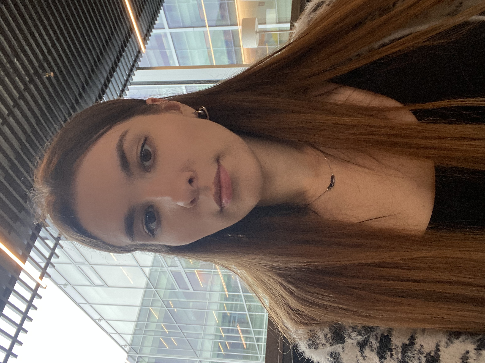

Gabrielė Tamaševičiūtė

About me
I am an ambitious and enthusiastic individual, and I strive to be extremely friendly, helpful, empathetic, and honest in all of my interactions. I prioritize the delivery of quality work within set timelines and value order and effective communication with both my managers and colleagues. Additionally, I highly value opportunities to express myself and contribute to the team in meaningful ways.
Skills
- Good skills in Microsoft Office programs;
- Analytical thinking;
- Excellent communication skills;
- Punctuality;
- Attention to details;
- Multitasking.
Work experience
- Planner/Coordinator:
Oct 2021 - Now
- Planning and organizing cargo flows in order to efficiently plan the movement of supervised vehicles;
- Selecting suitable flights and adjusting them to changing circumstances;
- Systematization and analysis of received information about the movement of vehicles;
- Administrator:
Mar 2021 - Oct 2021
- Working with various projects (power grid, debt collection, apartment administration, violation administration, surveys, etc.);
- Administration of electronic mail, calls, social networks, communication with clients;
- Management of company documentation, preparation and storage of letters, documents;
Languages
- Lithuanian
- English
- Russian
Other
Contact me
My hobbies